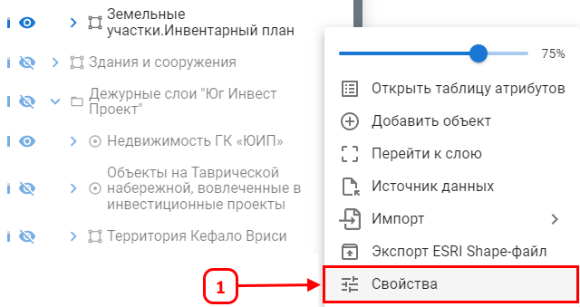
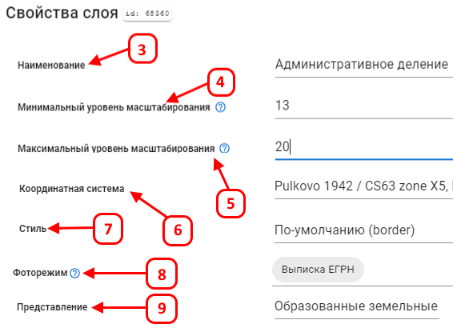
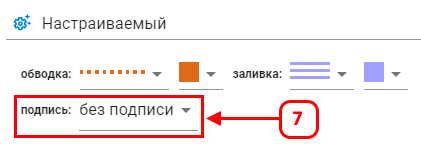
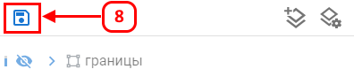

Настройка свойств слоя в проекте
Настройки слоя позволяют менять его наименование и систему координат, управлять видимостью на карте и изменять внешний вид объектов.
Откройте свойства слоя (1)

Измените координатную систему (5), чтобы слой находился в правильной геопозиции на карте.

Настройка стиля (6) позволяет выбрать один из 10 базовых стилей или настроить самостоятельно.

В пункте подпись (7) выберите один из атрибутов, который будет отображаться на карте для объектов слоя.
После настройки свойств, слой обнвится на карте и станет отображаться в соответствии с новыми параметрами.
Нажмите (8), чтобы сохранить внесенные изменения слоя в проекте.

В графе "Минимум" (3) поставьте значение 13 — объекты на карте скроются при масштабе 1:45 000 и меньше.
В графе "Максимум" (4) поставьте значение 20 — объекты на карте скроются при масштабе 1:300 и крупнее.